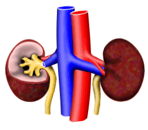
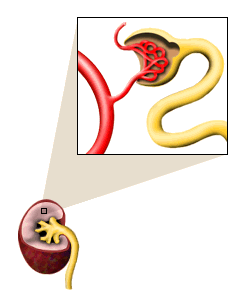

Kidneys and Metals Problem Set
Problem 1: Kidney anatomy and function
For help to answer the question:
What is one primary function of the tubules in the kidney?
A. filtering water and solutes out of the blood B. reabsorption of water and solutes C. producing bile D. transporting filtered blood to the lungs
Tutorial
|
A normal, healthy human being has two kidneys. The kidneys' job in the body is to filter and remove waste products from the blood. In the process it is important that the kidneys retain as much of the good stuff as possible, such as water, sugars and salts, while filtering out the waste products, such as urea.
|
 |
|  | The functional units in the kidney are called nephrons. There are about 1.3 million nephrons in each kidney. Each nephron has two main parts, the glomerulus and the tubules. The glomerulus is like a big filter, removing wastes, other solutes, and water from the blood. The water and all the things in it then travel into the tubule. The tubule reabsorbs as much of the water and good solutes (dissolved substances) as possible. Useful solutes that are reabsorbed in the tubules include things like amino acids, sugars, and salts. In 24 hours, the tubules can reabsorb more than one kilogram of salt (NaCl) and 180 grams of sugar (glucose). |


The Biology Project
The University of Arizona
Monday, February 22, 1999
Contact the Development Team
http://www.biology.arizona.edu
All contents copyright © 1999. All rights reserved.